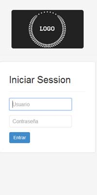
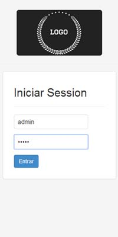
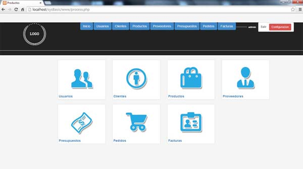
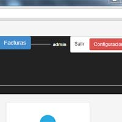
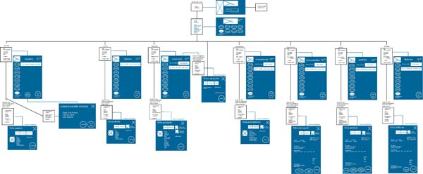
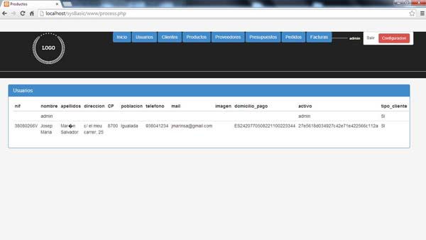
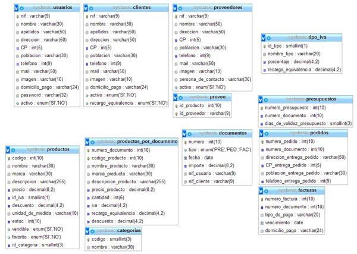

Bienvenido al manual que le enseñará cómo extraer el máximo beneficio de la aplicación para ventas, que acaba de adquirir.
En estas pàginas podrá aprender cómo:
Inmediatamente después de iniciar la aplicación, le aparecerá la pantalla de "registro", o también denominada "logueo".
Una vez iniciada la aplicación aparecerá en la pantalla de "registro".
En esta pantalla encontrará un espacio donde ha de introducir su nombre de usuario, y su contraseña.

Nota: Dado el caso en que, se trate de su primer acceso al programa, siga los pasos anteriores usando como :

Una vez verificados los datos, el sistema le permitirá acceder a la pantalla de "Menú", donde, en la parte superior derecha, podrá ver en todo momento, en la aplicación su nombre de usuario.
Nota: Recuerde eliminar este usuario genérico, una vez haya introducido los usuarios que desea.
Una vez iniciada la aplicación, desde la página de "registro" (o logueo); y, una vez introducidos y verificados, sus datos de: usuario y contraseña. Podrá acceder a la pantalla de "Menú".

En la parte superior izquierda, aparecerá el logotipo de su empresa (una vez configurado para que aparezca), y podrá visualizar, seguidamente hacia la derecha, una série de pestañas que le llevarán a las secciones a las que puede acceder.
A continuación, (de izquierda a derecha), en esta pantalla de "Menú", aparecerá su nombre de usuario en la parte superior derecha de la pantalla.
También podrá visualizar en esta zona, el botón de SALIR junto al del CONFIGURACIÓN general.
En la zona central, o cuerpo de la página, verá los iconos (botones) de las secciones a las que puede acceder. Este otro camino, que complementa a las pestañas de arriba (antes mencionadas); ambos botones: pestañas e iconos, le llevarán a las mismas secciones que tengan el mismo nombre. Se trata de dos caminos al mismo "lugar", el cual escogerá usted, según se sienta más cómodo.
Nota: Dado el caso en que, se trate de su primer acceso al programa, y haya entrado utilizando el usuario: admin, el nombre de usuario que aparecerá arriba a la derecha sera: admin como :

Nota: Recuerde eliminar este usuario genérico, una vez haya introducido los usuarios que desea.
Una vez iniciada la aplicación, desde la página de "registro" (o logueo); y, una vez introducidos y verificados, sus datos de: usuario y contraseña.
Podrà acceder a la pantalla de "Menú"
Desde aquí y en adelante, en todas las paginas en las que se encuetre (exceptuando las fichas específicas), aparecerá su nombre de usuario en la parte superior derecha.
Al lado de su nombre de usuario, encontrará un botón, SALIR donde, presionandolo una vez, podrá Salir de su Sesión o "des-loguearse"; volviendo a la página principal de registro o logueo.
En esta sección aprenderá cómo personalizar su aplicación de acorde a los estándares de imagen de su empresa.
Una vez iniciada la aplicación, desde la página de "registro" (o logueo); y, una vez introducidos y verificados, sus datos de: usuario y contraseña. Podrá acceder a la pantalla de "Menú". En esta pantalla, encontrará:
Esta última sección "Usuarios", sólo aparecerá en los casos en que:
Presione el botón "CONFIGURACIÓN"en la parte superior derecha,. A continuación le aparecerá una ficha con las opciones de:
Seleccione Cargar imagen de logotipo de Portada, busque entre las carpetas, aquella dónde guardó su imagen de logotipo; escojalá y una vez cargada, pulse el botón GUARDAR. Esta imagen, aparecerà en la aplicación nada más reiniciarla, en la pantalla de regristro o logueo; se trata de una imagen con una medida de (...ejemplo 400px x 200px).
A continuación seleccione: Cargar imagen de logotipo de Pantallas, busque entre las carpetas, aquella dónde guardó su imagen de logotipo; escojalá y una vez cargada, pulse el botón GUARDAR. Esta imagen aparecerá en todo el resto de pantallas, en la parte superior izquierda; se trata de una imagen más pequeña con una medida de (...ejemplo 200px x 200px).
Una vez iniciada la aplicación, desde la página de "registro" (o logueo); y, una vez introducidos y verificados, sus datos de: usuario y contraseña. Podrá acceder a la pantalla de "Menú". En esta pantalla, encontrará:
Esta última sección "Usuarios", sólo aparecerá en los casos en que:
Presione el botón "CONFIGURACIÓN"en la parte superior derecha,. A continuación le aparecerá una ficha con las opciones de:
Seleccione Cargar imagen de Portada, busque entre las carpetas, aquella dónde guardó su imagen de portada; escojalá y una vez cargada, pulse el botón GUARDAR. Esta imagen, aparecerà en la aplicación nada más reiniciarla, en la pantalla de regristro o logueo; se trata de una imagen con una medida de (...ejemplo 200px x 400px).
Una vez iniciada la aplicación, desde la página de "registro" (o logueo); y, una vez introducidos y verificados, sus datos de: usuario y contraseña. Podrá acceder a la pantalla de "Menú". En esta pantalla, encontrará:
Esta última sección "Usuarios", sólo aparecerá en los casos en que:
Presione el botón "CONFIGURACIÓN"en la parte superior derecha,. A continuación le aparecerá una ficha con las opciones de:
Seleccione Color de Fondo, busque entre los colores ofrecidos, aquel que más se parezca a su color corporativo; escojalo y una vez cargado, pulse el botón GUARDAR. Esta acción hará que todas las secciones de la aplicación cambien al color escogido
A continuación seleccione: Color de botones, busque entre los colores ofrecidos, aquel que más combine con su color corporativo; escojalo y una vez cargado, pulse el botón GUARDAR. Esta acción hará que todas las secciones de la aplicación cambien el color de los botones.
En esta sección visualizará la esctuctura de su aplicación.
Esto le dará una imagen esquemática y clara de la estructura de su aplicación, para poder navegar por ella, siempre teniendo presente dónde se encuentra.
Una vez iniciada la aplicación, desde la página de "registro" (o logueo); y, una vez introducidos y verificados, sus datos de: usuario y contraseña. Podrá acceder a la pantalla de "Menú", dónde podrá visualizar:
Estas dos ventanas, pertenecen a los dos primeros niveles del árbol esquemático abajo representado.
Los iconos (o pestañas) que representan las secciones a las que usted puede entrar y, desde las que gestionará todo su negocio; pertenecen al siguiente nivel.
Así pues, desde la primera ventana (de registro o logueo) solo puede acceder a la de Menú y, desde esta, a todo el resto de ventanas.

Lea atentamente esta sección para conseguir gestionar bien los diferentes datos, el proceso es parecido de uno a otros datos, pero ciertas variaciones hacen que deba prestar atencion en que sección se encuentra.
Como "administrador" de su empresa, usted ha adquirido esta aplicación para gestionar a sus trabajadores.
Desde "Usuarios" podrá hacerlo con facilidad.
Cada uno de sus comerciales tendrá su propio acceso a la aplicación, y podrá gestionar clientes, productos y stock; siendo usted el administrador, el que gestione el acceso de sus trabajadores.
Desde la pantalla del "Menú" seleccione el icono (botón o pestaña) "USUARIOS".
Entramos entonces en la sección de Usuarios.
(Sabremos siempre en que sección estamos, observando las pestañas que hemos seleccionado para entrar en dicha sección). En este Caso, la pestaña "usuarios" estará iluminada, o cambiada de color.

Arriba de izquierda a derecha, encontrará:
Nada más entrar en esta página podrá ver un listado de sus trabajadores, o comerciales.
Escoja el trabajador que desee y presione su nombre para entrar en su ficha detallada con todos los datos.
(Si es la primera vez que accede a esta aplicación, solo verá al usuario admin).
Una vez presionado el nombre del trabajador que desea. Se abrirá una ventana emergente en la que podrá observar todos los datos de ese usuario escogido.
Se trata de la ficha de usuario.
Si selecciona un usuario préviamente inscrito, (lo escoge de la lista), se le abrirá la ventana emergente con los datos de ese usuario.
Desde esta ficha de usuario pordrá tocar cualquier campo que necesite, para modificar sus valores, dado el caso en el que no sean correctos.
Si estando en la ficha de usuario, presiona el botón "nuevo", "añadir nuevo", la ficha de usuario aparecerá con los campos vacios, que podrá rellenar y registrar, presionando en el botón guardar.
De este modo tendrá un nuevo usuario registrado que le aparecerá en la lista, una vez cierre la ventana emergente, mediante el aspa que aparece arriba a su derecha; volverá la sección de clientes, y podrá comprobar en su listado que esta nueva entrada ha sido realizada con éxito.
Debido a las diversas normas legales, los datos empresariales no pueden borrarse hasta no haber pasado un tiempo prudencial, en el que nos los pueden solicitar las autoridades.
Para evitar la pérdida de datos de trabajadores que hayan sido dados de baja, esta aplicación ofrece la opción de desactivar en vez de borrar.
Así pues, desverifique la casilla de check-box de "activo/desactivo" y no perderá los datos de ese usuario dado de baja.
Podrá consultarlos siempre, pero ya no los verá en su trato diario al gestionar usuarios. Desapareceran de la lista que hay al entrar en esta sección.
Esta aplicación le permitirá gestionar a sus Clientes.
Desde la pantalla de Menú, accediendo a "Clientes" podrá hacerlo con facilidad.
Cada uno de sus clientes quedará registrado con los datos necesarios para el buen funcionamiento de su empresa; y, podrá acceder a ellos con facilidad y rapidez.
Desde la pantalla del "Menú" seleccione el icono ( o botón ) "CLIENTES".
Sabremos siempre en que sección estamos, observando las pestañas que hemos seleccionado para entrar en la sección.
En este Caso, la pestaña "clientes" estará iluminada, o cambiada de color.
Arriba de izquierda a derecha, encontrará:
Nada más entrar en esta página podrá ver un listado de sus clientes.
Escoja el cliente que desee y presione su nombre para entrar en su ficha, detallada con todos los datos.
Dado el caso en que exista una lista muy larga de clientes, siempre puede utilizar un filtro existente, que ayuda a autorellenar, para encontrar antes el nombre del cliente que busca.
Una vez presionado el nombre del cliente que desea. Se abrirá una ventana emergente en la que podrá observar todos los datos de ese usuario escogido.
Se trata de la ficha de cliente.
Si selecciona un cliente préviamente inscrito, (lo escoge de la lista), se le abrirá la ventana emergente con los datos de ese cliente.
Desde esta ficha de cliente pordrá tocar cualquier campo que necesite, para modificar sus valores, dado el caso en el que no sean correctos.
Si estando en la ficha de cliente, presiona el botón "nuevo", "añadir nuevo", la ficha de cliente aparecerá con los campos vacios, que podrá rellenar y registrar, presionando en el botón guardar.
De este modo tendrá un nuevo cliente registrado que le aparecerá en la lista, una vez cierre la ventana emergente, mediante el aspa que aparece arriba a su derecha; volverá la sección de clientes, y podrá comprobar en su listado que esta nueva entrada ha sido realizada con éxito.
Debido a las diversas normas legales, los datos empresariales no pueden borrarse hasta no haber pasado un tiempo prudencial, en el que nos los pueden solicitar las autoridades.
Para evitar la pérdida de datos de clientes que hayan sido dados de baja, esta aplicación ofrece la opción de desactivar en vez de borrar.
Así pues, desverifique la casilla de check-box de "activo/desactivo" y no perderá los datos de ese cliente dado de baja.
Podrá consultarlos siempre, pero ya no los verá en su trato diario al gestionar clientes. Desapareceran de la lista que hay al entrar en esta sección.
Esta aplicación le permitirá gestionar a sus Proveedores.
Desde la pantalla de Menú, accediendo a "Proveedores" podrá hacerlo con facilidad.
Cada uno de sus proveedores quedará registrado con los datos necesarios para el buen funcionamiento de su empresa; y, podrá acceder a ellos con facilidad y rapidez.
Desde la pantalla del "Menú" seleccione el icono ( o botón ) "PROVEEDORES".
Sabremos siempre en que sección estamos, observando las pestañas que hemos seleccionado para entrar en la sección.
En este Caso, la pestaña "proveedores" estará iluminada, o cambiada de color.
Arriba de izquierda a derecha, encontrará:
Nada más entrar en esta página podrá ver un listado de sus proveedores.
Escoja el proveedor que desee y presione su nombre para entrar en su ficha, detallada con todos los datos.
Dado el caso en que exista una lista muy larga de proveedores, siempre puede utilizar un filtro existente, que ayuda a autorellenar, para encontrar antes el nombre del proveedor que busca.
Una vez presionado el nombre del proveedor que desea. Se abrirá una ventana emergente en la que podrá observar todos los datos de ese proveedor escogido.
Se trata de la ficha de proveedor.
Si selecciona un proveedor préviamente inscrito, (lo escoge de la lista), se le abrirá la ventana emergente con los datos de ese proveedor.
Desde esta ficha de proveedor pordrá tocar cualquier campo que necesite, para modificar sus valores, dado el caso en el que no sean correctos.
Si estando en la ficha de proveedores, presiona el botón "nuevo", "añadir nuevo", la ficha de proveedores aparecerá con los campos vacios, que podrá rellenar y registrar, presionando en el botón guardar.
De este modo tendrá un nuevo proveedor registrado que le aparecerá en la lista, una vez cierre la ventana emergente, mediante el aspa que aparece arriba a su derecha; volverá la sección de clientes, y podrá comprobar en su listado que esta nueva entrada ha sido realizada con éxito.
Debido a las diversas normas legales, los datos empresariales no pueden borrarse hasta no haber pasado un tiempo prudencial, en el que nos los pueden solicitar las autoridades.
Para evitar la pérdida de datos de proveedores que hayan sido dados de baja, esta aplicación ofrece la opción de desactivar en vez de borrar.
Así pues, desverifique la casilla de check-box de "activo/desactivo" y no perderá los datos de ese proveedor dado de baja.
Podrá consultarlos siempre, pero ya no los verá en su trato diario al gestionar proveedores. Desapareceran de la lista que hay al entrar en esta sección.
Esta aplicación le permitirá gestionar sus Productos.
Desde la pantalla de Menú, accediendo a "Productos" podrá hacerlo con facilidad.
Cada uno de sus productos quedará registrado con los datos necesarios para el buen funcionamiento de su empresa; y, podrá acceder a ellos con facilidad y rapidez.
Desde la pantalla del "Menú" seleccione el icono ( o botón ) "PRODUCTOS".
Sabremos siempre en que sección estamos, observando las pestañas que hemos seleccionado para entrar en la sección.
En este Caso, la pestaña "productos" estará iluminada, o cambiada de color.
Arriba de izquierda a derecha, encontrará:
Nada más entrar en esta página podrá ver un listado de sus productos.
Escoja el producto que desee y presione su nombre para entrar en su ficha, detallada con todos los datos.
Dado el caso en que exista una lista muy larga de productos, siempre puede utilizar un filtro existente, que ayuda a encontrar el producto filtrando por CATEGORIAS, para encontrar antes el nombre del producto que busca.
Una vez presionado el nombre del producto que desea. Se abrirá una ventana emergente en la que podrá observar todos los datos de ese proveedor escogido.
Se trata de la ficha de proveedor.
Si selecciona un producto préviamente inscrito, (lo escoge de la lista), se le abrirá la ventana emergente con los datos de ese producto.
Desde esta ficha de producto pordrá tocar cualquier campo que necesite, para modificar sus valores, dado el caso en el que no sean correctos.
Si estando en la ficha de productos, presiona el botón "nuevo", "añadir nuevo", la ficha de productos aparecerá con los campos vacios, que podrá rellenar y registrar, presionando en el botón guardar.
De este modo tendrá un nuevo producto registrado que le aparecerá en la lista, una vez cierre la ventana emergente, mediante el aspa que aparece arriba a su derecha; volverá la sección de productos, y podrá comprobar en su listado que esta nueva entrada ha sido realizada con éxito.
Debido a las diversas normas legales, los datos empresariales no pueden borrarse hasta no haber pasado un tiempo prudencial, en el que nos los pueden solicitar las autoridades.
Para evitar la pérdida de datos de productos que hayan sido dados de baja, esta aplicación ofrece la opción de desactivar en vez de borrar.
Así pues, desverifique la casilla de check-box de "activo/desactivo" y no perderá los datos de ese producto dado de baja.
Podrá consultarlos siempre, pero ya no los verá en su trato diario al gestionar productos. Desaparecerán de la lista que hay al entrar en esta sección.
Esta aplicación le permitirá gestionar las Categorias de sus productos.
Desde la pantalla de Menú, accediendo a "CATEGORIAS" podrá hacerlo con facilidad.
Cada una de sus categorias quedará registrada con los datos necesarios para el buen funcionamiento de su empresa; y, podrá acceder a ellos con facilidad y rapidez.
Desde la pantalla del "Menú" seleccione el icono ( o botón ) "CATEGORIAS".
En este caso, tendremos un listado de las categorias existentes.
Arriba de izquierda a derecha, encontrará:
Nada más entrar en esta página podrá ver un listado de sus categorias.
Escoja la categoria que desee y presione su nombre para entrar en su ficha, detallada con todos los datos.
Dado el caso en que exista una lista muy larga de categorias, siempre puede utilizar un filtro existente, que ayuda a autorellenar, para encontrar antes el nombre de la categoria que busca.
Una vez presionado el nombre de la categoria que desea. Se abrirá una ventana emergente en la que podrá observar todos los datos de esa categoria escogida.
Se trata de la ficha de categoria.
Si selecciona una categoria préviamente inscrita, (la escoge de la lista), se le abrirá la ventana emergente con los datos de esa categoria.
Desde esta ficha de categoria pordrá tocar cualquier campo que necesite, para modificar sus valores, dado el caso en el que no sean correctos.
Si estando en la ficha de categorias, presiona el botón "nuevo", "añadir nuevo", la ficha de categorias aparecerá con los campos vacios, que podrá rellenar y registrar, presionando en el botón guardar.
De este modo tendrá una nueva categoria registrada que le aparecerá en la lista, una vez cierre la ventana emergente, mediante el aspa que aparece arriba a su derecha; volverá la sección de categorias, y podrá comprobar en su listado que esta nueva entrada ha sido realizada con éxito.
Debido a la necesidad de utilizar una categoria, o no utilizarla, según demanda, campañas promocionales, etc...
Esta aplicación ofrece la posibilidad de desactivar las categorias que hayan sido dados de baja, en vez de borrar los datos.
Así pues, desverifique la casilla de check-box de "activo/desactivo" y no perderá los datos de esa categoria dada de baja.
Podrá consultarlas siempre, pero ya no los verá en su trato diario al gestionar clientes. Desaparecerán de la lista que hay al entrar en esta sección.
Esta aplicación le permitirá gestionar sus Presupuestos.
Desde la pantalla de Menú, accediendo a "PRESUPUESTOS" podrá hacerlo con facilidad.
Cada uno de sus presupuestos quedará registrado con los datos necesarios para el buen funcionamiento de su empresa; y, podrá acceder a ellos con facilidad y rapidez.
Desde la pantalla del "Menú" seleccione el icono ( o botón ) "PRESUPUESTOS".
En este caso, tendremos un listado de los presupuestos existentes de un cliente.
Arriba de izquierda a derecha, encontrará:
Nada más entrar en esta página podrá ver un listado de presupuestos almacenados en la base de datos; mediante el filtro de cliente, reduzca esta lista a los presupuestos del cliente seleccionado.
Escoja el presupuesto que desee y presione su número de identificación para entrar en su ficha, detallada con todos los datos.
Una vez presionado el nombre del presupuesto que desea. Se abrirá una ventana emergente en la que podrá observar todos los datos de ese presupuesto escogido.
Se trata de la ficha de presupuesto.
Si selecciona un presupuesto préviamente inscrito, (lo escoge de la lista), se le abrirá la ventana emergente con los datos de ese presupuesto.
Desde esta ficha de presupuesto pordrá tocar cualquier campo que necesite, para modificar sus valores, dado el caso en el que no sean correctos.
Si estando en la ficha de presupuesto, presiona el botón "nuevo", "añadir nuevo", la ficha de presupuesto aparecerá con los campos vacios, que podrá rellenar y registrar, presionando en el botón guardar.
De este modo tendrá un nuevo presupuesto registrado que le aparecerá en la lista, una vez cierre la ventana emergente, mediante el aspa que aparece arriba a su derecha; volverá la sección de presupuestos, y podrá comprobar en su listado que esta nueva entrada ha sido realizada con éxito.
Debido a las diversas normas legales, los datos empresariales no pueden borrarse hasta no haber pasado un tiempo prudencial, en el que nos los pueden solicitar las autoridades.
Para evitar la pérdida de datos de pedidos que hayan sido dados de baja, esta aplicación ofrece la opción de desactivar en vez de borrar.
Así pues, desverifique la casilla de check-box de "activo/desactivo" y no perderá los datos de ese presupuesto dado de baja.
Podrá consultarlos siempre, pero ya no los verá en su trato diario al gestionar presupuestos. Desapareceran de la lista que hay al entrar en esta sección.
Esta aplicación le permitirá gestionar sus Pedidos.
Desde la pantalla de Menú, accediendo a "PEDIDOS" podrá hacerlo con facilidad.
Cada uno de sus pedidos quedará registrado con los datos necesarios para el buen funcionamiento de su empresa; y, podrá acceder a ellos con facilidad y rapidez.
Desde la pantalla del "Menú" seleccione el icono ( o botón ) "PEDIDOS".
En este caso, tendremos un listado de los pedidos existentes de un cliente.
Arriba de izquierda a derecha, encontrará:
Nada más entrar en esta página podrá ver un listado de pedidos almacenados en la base de datos; mediante el filtro de cliente, reduzca esta lista a los pedidos del cliente seleccionado.
Escoja el pedido que desee y presione su número de identificación para entrar en su ficha, detallada con todos los datos.
Una vez presionado el nombre del pedido que desea. Se abrirá una ventana emergente en la que podrá observar todos los datos de ese pedido escogido.
Se trata de la ficha de pedido.
Si selecciona un pedido préviamente inscrito, (lo escoge de la lista), se le abrirá la ventana emergente con los datos de ese pedido.
Desde esta ficha de pedido pordrá tocar cualquier campo que necesite, para modificar sus valores, dado el caso en el que no sean correctos.
Si estando en la ficha de pedidos, presiona el botón "nuevo", "añadir nuevo", la ficha de pedidos aparecerá con los campos vacios, que podrá rellenar y registrar, presionando en el botón guardar.
De este modo tendrá un nuevo pedido registrado que le aparecerá en la lista, una vez cierre la ventana emergente, mediante el aspa que aparece arriba a su derecha; volverá la sección de pedidos, y podrá comprobar en su listado que esta nueva entrada ha sido realizada con éxito.
Debido a las diversas normas legales, los datos empresariales no pueden borrarse hasta no haber pasado un tiempo prudencial, en el que nos los pueden solicitar las autoridades.
Para evitar la pérdida de datos de pedidos que hayan sido dados de baja, esta aplicación ofrece la opción de desactivar en vez de borrar.
Así pues, desverifique la casilla de check-box de "activo/desactivo" y no perderá los datos de ese pedido dado de baja.
Podrá consultarlos siempre, pero ya no los verá en su trato diario al gestionar pedidos. Desapareceran de la lista que hay al entrar en esta sección.
Esta aplicación le permitirá gestionar sus Facturas.
Desde la pantalla de Menú, accediendo a "FACTURAS" podrá hacerlo con facilidad.
Cada uno de sus proveedores quedará registrado con los datos necesarios para el buen funcionamiento de su empresa; y, podrá acceder a ellos con facilidad y rapidez.
Desde la pantalla del "Menú" seleccione el icono ( o botón ) "FACTURAS".
En este caso, tendremos un listado de las facturas existentes de un cliente.
Arriba de izquierda a derecha, encontrará:
Nada más entrar en esta página podrá ver un listado de facturas almacenados en la base de datos; mediante el filtro de cliente, reduzca esta lista a los pedidos del cliente seleccionado.
Escoja la factura que desee y presione su número de identificación para entrar en su ficha, detallada con todos los datos.
Una vez presionado el nombre de la factura que desea. Se abrirá una ventana emergente en la que podrá observar todos los datos de esa factura escogida.
Se trata de la ficha de factura.
Si selecciona una factura préviamente inscrita, (lo escoge de la lista), se le abrirá la ventana emergente con los datos de esa factura.
Desde esta ficha de factura pordrá tocar cualquier campo que necesite, para modificar sus valores, dado el caso en el que no sean correctos.
Si estando en la ficha de facturas, presiona el botón "nuevo", "añadir nuevo", la ficha de facturas aparecerá con los campos vacios, que podrá rellenar y registrar, presionando en el botón guardar.
De este modo tendrá una nueva factura registrada que le aparecerá en la lista, una vez cierre la ventana emergente, mediante el aspa que aparece arriba a su derecha; volverá la sección de facturas, y podrá comprobar en su listado que esta nueva entrada ha sido realizada con éxito.
Debido a las diversas normas legales, los datos empresariales no pueden borrarse hasta no haber pasado un tiempo prudencial, en el que nos los pueden solicitar las autoridades.
Para evitar la pérdida de datos de facturas que hayan sido dadas de baja, esta aplicación ofrece la opción de desactivar en vez de borrar.
Así pues, desverifique la casilla de check-box de "activo/desactivo" y no perderá los datos de ese facturas dado de baja.
Podrá consultarlos siempre, pero ya no los verá en su trato diario al gestionar facturas. Desapareceran de la lista que hay al entrar en esta sección.
Esta aplicación le permitirá conocer la estructura de su BASE DE DATOS.
Conocerla le puede ayudar a entendre cómo se estructura esta aplicación y cómo sus datos son procesados para facilitarle cualquier gestión.
Visualmente, su base de datos, seria la siguiente:

En el ámbito de la programación de base de datos, la estructura de esta es:
CREATE TABLE IF NOT EXISTS `categorias` (
`codigo` smallint(3) NOT NULL AUTO_INCREMENT,
`nombre` varchar(30) NOT NULL,
PRIMARY KEY (`codigo`)
) ENGINE=InnoDB DEFAULT CHARSET=utf8 AUTO_INCREMENT=12 ;
--
-- Bolcant dades de la taula `categorias`
--
INSERT INTO `categorias` (`codigo`, `nombre`) VALUES
(1, 'accesorios'),
(2, 'bailarinas'),
(3, 'botas de mujer'),
(4, 'botas de hombre'),
(5, 'botines'),
(6, 'chanclas'),
(7, 'esclavas'),
(8, 'mocasines'),
(9, 'nauticos'),
(10, 'pantuflas'),
(11, 'sandalias');
-- --------------------------------------------------------
--
-- Estructura de la taula `clientes`
--
CREATE TABLE IF NOT EXISTS `clientes` (
`nif` varchar(9) NOT NULL,
`nombre` varchar(30) NOT NULL,
`apellidos` varchar(50) DEFAULT NULL,
`direccion` varchar(50) DEFAULT NULL,
`CP` int(5) DEFAULT NULL,
`poblacion` varchar(30) DEFAULT NULL,
`telefono` int(9) DEFAULT NULL,
`mail` varchar(50) DEFAULT NULL,
`imagen` varchar(10) DEFAULT NULL,
`domicilio_pago` varchar(24) DEFAULT NULL,
`activo` enum('SI','NO') NOT NULL DEFAULT 'SI',
`recargo_equivalencia` enum('SI','NO') NOT NULL DEFAULT 'NO',
PRIMARY KEY (`nif`)
) ENGINE=InnoDB DEFAULT CHARSET=utf8;
--
-- Bolcant dades de la taula `clientes`
--
INSERT INTO `clientes` (`nif`, `nombre`, `apellidos`, `direccion`, `CP`, `poblacion`, `telefono`, `mail`, `imagen`, `domicilio_pago`, `activo`, `recargo_equivalencia`)
VALUES ('12345678A', 'Antonio', 'Alamo Antunez', 'C/ AAAA, 1', 1001, 'Aranjuez', 912345678, 'antonioalamo@a.com', '1.jpg', 'ES1020810001330200012345', 'SI', 'SI'),
('23456789B', 'Belinda', 'Borregan Benguerel', 'Av/ BBBB, 2', 2002, 'Benicarló', 962349999, 'bbb@b.com', '2.jpg', 'ES3320010066053300000012', 'SI', 'NO'),
('34567890C', 'Carmelo', 'Cifuentes Cortacan', 'Passeig de les Cabrres, 33', 8700, 'Igualada', 938041233, 'carcico@igualada.cat', '1.jpg', 'ES3600992001003300095112', 'SI', 'NO'),
('B08678908', 'La bona espardenya', NULL, 'C/ Nou, 71', 8700, 'Igualada', 938049999, 'bonaespardenya@be.cat', '1.jpg', 'ES3600662001009900035832', 'SI', 'NO');
-- --------------------------------------------------------
--
-- Estructura de la taula `documentos`
--
CREATE TABLE IF NOT EXISTS `documentos` (
`numero` int(10) NOT NULL AUTO_INCREMENT,
`tipo` enum('PRE','PED','FAC') NOT NULL,
`fecha` date NOT NULL,
`importe` decimal(8,2) NOT NULL,
`nif_usuario` varchar(9) NOT NULL,
`nif_cliente` varchar(9) NOT NULL,
PRIMARY KEY (`numero`)
) ENGINE=InnoDB DEFAULT CHARSET=utf8 AUTO_INCREMENT=1 ;
-- --------------------------------------------------------
--
-- Estructura de la taula `facturas`
--
CREATE TABLE IF NOT EXISTS `facturas` (
`numero_factura` int(10) NOT NULL AUTO_INCREMENT,
`numero_documento` int(10) NOT NULL DEFAULT '0',
`tipo_de_pago` varchar(20) DEFAULT NULL,
`vencimiento` date DEFAULT NULL,
`domicilio_pago` varchar(24) DEFAULT NULL,
PRIMARY KEY (`numero_factura`)
) ENGINE=InnoDB DEFAULT CHARSET=utf8 AUTO_INCREMENT=1 ;
-- --------------------------------------------------------
--
-- Estructura de la taula `pedidos`
--
CREATE TABLE IF NOT EXISTS `pedidos` (
`numero_pedido` int(10) NOT NULL AUTO_INCREMENT,
`numero_documento` int(10) NOT NULL DEFAULT '0',
`direccion_entrega_pedido` varchar(50) DEFAULT NULL,
`CP_entrega_pedido` int(5) DEFAULT NULL,
`poblacion_entrega_pedido` varchar(30) DEFAULT NULL,
`telefono_entrega_pedido` int(9) DEFAULT NULL,
PRIMARY KEY (`numero_pedido`)
) ENGINE=InnoDB DEFAULT CHARSET=utf8 AUTO_INCREMENT=1 ;
-- --------------------------------------------------------
--
-- Estructura de la taula `presupuestos`
--
CREATE TABLE IF NOT EXISTS `presupuestos` (
`numero_presupuesto` int(10) NOT NULL AUTO_INCREMENT,
`numero_documento` int(10) NOT NULL DEFAULT '0',
`dias_de_validez_presupuesto` smallint(3) DEFAULT NULL,
PRIMARY KEY (`numero_presupuesto`)
) ENGINE=InnoDB DEFAULT CHARSET=utf8 AUTO_INCREMENT=1 ;
-- --------------------------------------------------------
--
-- Estructura de la taula `productos`
--
CREATE TABLE IF NOT EXISTS `productos` (
`codigo` int(10) NOT NULL,
`nombre` varchar(30) NOT NULL,
`marca` varchar(30) DEFAULT NULL,
`descripcion` varchar(255) NOT NULL,
`precio` decimal(8,2) NOT NULL,
`id_iva` smallint(1) NOT NULL,
`descuento` decimal(4,2) DEFAULT NULL,
`unidad_de_medida` varchar(10) DEFAULT NULL,
`estoc` int(10) DEFAULT NULL,
`vendible` enum('SI','NO') NOT NULL DEFAULT 'SI',
`favorito` enum('SI','NO') NOT NULL DEFAULT 'NO',
`id_categoria` smallint(3) NOT NULL,
PRIMARY KEY (`codigo`)
) ENGINE=InnoDB DEFAULT CHARSET=utf8;
-- --------------------------------------------------------
--
-- Estructura de la taula `productos_por_documento`
--
CREATE TABLE IF NOT EXISTS `productos_por_documento` (
`numero_documento` int(10) NOT NULL,
`codigo_producto` int(10) NOT NULL,
`nombre_producto` varchar(30) NOT NULL,
`marca_producto` varchar(30) DEFAULT NULL,
`descripcion_producto` varchar(255) NOT NULL,
`precio_producto` decimal(8,2) NOT NULL,
`cantidad` int(6) NOT NULL,
`iva` decimal(4,2) NOT NULL,
`recargo_equivalencia` decimal(4,2) DEFAULT NULL,
`descuento` decimal(4,2) DEFAULT NULL,
PRIMARY KEY (`numero_documento`,`codigo_producto`)
) ENGINE=InnoDB DEFAULT CHARSET=utf8;
-- --------------------------------------------------------
--
-- Estructura de la taula `provee`
--
CREATE TABLE IF NOT EXISTS `provee` (
`id_producto` int(10) NOT NULL,
`id_proveedor` varchar(9) NOT NULL,
PRIMARY KEY (`id_producto`,`id_proveedor`)
) ENGINE=InnoDB DEFAULT CHARSET=utf8;
-- --------------------------------------------------------
--
-- Estructura de la taula `proveedores`
--
CREATE TABLE IF NOT EXISTS `proveedores` (
`nif` varchar(9) NOT NULL,
`nombre` varchar(50) NOT NULL,
`direccion` varchar(50) DEFAULT NULL,
`CP` int(5) DEFAULT NULL,
`poblacion` varchar(30) DEFAULT NULL,
`telefono` int(9) DEFAULT NULL,
`mail` varchar(50) DEFAULT NULL,
`imagen` varchar(10) DEFAULT NULL,
`persona_de_contacto` varchar(30) DEFAULT NULL,
`activo` enum('SI','NO') NOT NULL DEFAULT 'SI',
PRIMARY KEY (`nif`)
) ENGINE=InnoDB DEFAULT CHARSET=utf8;
-- --------------------------------------------------------
--
-- Estructura de la taula `tipo_iva`
--
CREATE TABLE IF NOT EXISTS `tipo_iva` (
`id_tipo` smallint(1) NOT NULL AUTO_INCREMENT,
`nombre_tipo` varchar(20) NOT NULL,
`porcentaje` decimal(4,2) NOT NULL,
`recargo_equivalencia` decimal(4,2) NOT NULL,
PRIMARY KEY (`id_tipo`)
) ENGINE=InnoDB DEFAULT CHARSET=utf8 AUTO_INCREMENT=5 ;
--
-- Bolcant dades de la taula `tipo_iva`
--
INSERT INTO `tipo_iva` (`id_tipo`, `nombre_tipo`, `porcentaje`, `recargo_equivalencia`)
VALUES (1, 'general', '21.00', '5.20'),
(2, 'reducido', '10.00', '1.40'),
(3, 'superreducido', '4.00', '0.50'),
(4, 'tabaco', '21.00', '0.75');
-- --------------------------------------------------------
--
-- Estructura de la taula `usuarios`
--
CREATE TABLE IF NOT EXISTS `usuarios` (
`nif` varchar(9) NOT NULL,
`nombre` varchar(30) NOT NULL,
`apellidos` varchar(50) NOT NULL,
`direccion` varchar(50) DEFAULT NULL,
`CP` int(5) DEFAULT NULL,
`poblacion` varchar(30) DEFAULT NULL,
`telefono` int(9) DEFAULT NULL,
`mail` varchar(50) DEFAULT NULL,
`imagen` varchar(10) DEFAULT NULL,
`domicilio_pago` varchar(24) DEFAULT NULL,
`password` varchar(32) NOT NULL,
`activo` enum('SI','NO') NOT NULL DEFAULT 'SI',
PRIMARY KEY (`nif`)
) ENGINE=InnoDB DEFAULT CHARSET=utf8;
--
-- Bolcant dades de la taula `usuarios`
--
INSERT INTO `usuarios` (`nif`, `nombre`, `apellidos`, `direccion`, `CP`, `poblacion`, `telefono`, `mail`, `imagen`, `domicilio_pago`, `password`, `activo`)
VALUES ('38080266V', 'Josep Maria', 'Marín Salvador', 'c/ el meu carrer, 25', 8700, 'Igualada', 938041234, 'jmarinsa@gmail.com', NULL, 'ES2420770508221100223344', '27e5618d034927c42e71e422566c112a', 'SI');
/*!40101 SET CHARACTER_SET_CLIENT=@OLD_CHARACTER_SET_CLIENT */;
/*!40101 SET CHARACTER_SET_RESULTS=@OLD_CHARACTER_SET_RESULTS */;
/*!40101 SET COLLATION_CONNECTION=@OLD_COLLATION_CONNECTION */;
La aplicación que ha adquirido, posee un sistema fàcil para introducir los datos que desea en la base de datos y tratar con ellos.
Vea los puntos:
La aplicación que ha adquirido, posee un sistema fàcil para modificar los datos que desea en la base de datos y tratar con ellos.
Vea los puntos:
La aplicación que ha adquirido, posee un sistema fàcil para eliminar los datos que desea en la base de datos.
Vea los puntos:
Esperamos que disfrute con esta nueva aplicación que ha adquirido y que le sea de gran utilidad para su empresa.
Asimismo, confiamos que el "Manual de Uso de la aplicación Back-End" haya sido interesante y clarificador para el entendimiento y la mejora del manejo de la aplicación "Back-End".
Para cualquier duda o consulta no dude en ponerse en contacto con nosotros: